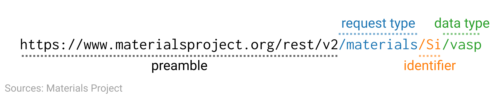

The Materials Project¶
Authors: Enze Chen and Mark Asta (University of California, Berkeley)
Note
This is an interactive exercise, so you will want to click the and open the notebook in DataHub (or Colab for non-UCB students).
Learning objectives¶
This notebook contains a series of exercises that explore the Materials API (MAPI), with some content borrowed from the Materials Project Workshop and Materials Virtual Lab. We want to give you some hands-on practice working with the MAPI so that you:
Are familiar with REST principles and API usage (broadly speaking).
Feel comfortable using the MAPI and Pymatgen for your self-directed research.
Learn best practices for working with programmatic tools.
We will progress through most of this notebook together as a group and we’re happy to answer any questions you may have about this content.
Contents¶
These exercises are grouped into the following sections:
API overview¶
The word “API” is a term that you’ve probably heard before, and it’s short for “application programming interface” (which you may not have heard before).
What an API does is that it gives a way for your computer to communicate with a database through a series of actions that you call.
One benefit of having an API is that it hides away the implementation details of the database and you can focus on getting the data you need, with the method of your choice—like Python!
This would be analogous to, instead of writing with open('ridiculous/path/that/we/never/remember') and sifting through the file, simply saying “Accio, data!”… yeah, something like that. 😅

REST 😴¶
As we all know, “All APIs are equal, but some APIs are more equal than others.” In particular, a preferred design of APIs is one that follows the Representational State Transfer (REST) architectural style, which enforces a standardized set of commands that can be performed over HTTP requests. APIs that obey these principles are termed “RESTful” and they allow the data to be queried with unique resource IDs in a uniform manner. The details of this aren’t too important for this module, but later when we talk about access patterns you will at least be familiar with some of the underlying context.
Materials API¶
Now we’re ready to work with the Materials API, or MAPI, and programmatically access data from the MP database.
API key¶
For security reasons, MAPI (and most APIs) requires an API key in order for you to access the data. This key can be generated from the MP Dashboard and is unique to you. Therefore, you should keep this key private so no one uses it for nefarious purposes.
While this intuitively makes sense, how might we implement it in our code that is later shared with our collaborators? In particular, it seems like we would have to hard code it as a string in our code, and then have to remember to scrub it later, which sounds risky. As a solution to this problem, we’ll suggest two alternatives, one of which follows best practice and the other is a temporary workaround.
Option 1: saving the API key in your system’s environment variables¶
All operating systems have a set of environment variables that programs will reference (such as $HOME or $PATH), and it’s possible to add to this list by creating your own environment variables.
Therefore, one option is to store your MP API key under a new variable named MAPI_KEY, much like how you associate entities in a Python dict.
The API key is stored locally on your computer only.
Now when you want to use the API key in your code, you will type:
import os
api_key = os.environ['MAPI_KEY']
# do something with API key now stored in the "api_key" variable
where os is a handy package that interfaces with your operating system.
Note that the above Python code will work on any OS, and runs for any user that has this set up without revealing any private information!
Option 2: saving the API key in another file¶
The first method is the preferred way, but it only works if we can access our environment variables.
This might fail if you’re on a company device that doesn’t give you admin priviledges, or you’re on a [shared] cloud system like DataHub where it’s not clear how one would do this—safely, or at all. 😓
So, the workaround that we’ve devised for you, at least for this lesson, is for you to store your API in an external text file, and then load the api_key variable by reading the contents of that file.
Please right-click the {jupyterhub} logo in the top-left corner and open the main directory in a new tab.
Then navigate to the file
mi-book > assets > files > mp_api_key.txt
Once there, copy your API key from the MP website dashboard and paste it onto the second line of that file, below the comment. Then save the file and close the tab. When we can then load in our API key with the familiar syntax:
with open('../../assets/files/mp_api_key.txt', 'r') as f:
api_key = f.readlines()[1].strip()
In the code below, we combine the two methods into one using a try/except block and include some assert statements as some guardrails.
Run this code ONLY AFTER you have pasted your API key into the correct place (see above).
# get API key using one of two ways
api_key = None
try: # this is for running locally
import os
api_key = os.environ['MAPI_KEY']
except: # this is for running on DataHub
with open('../../assets/files/mp_api_key.txt', 'r') as f:
api_key = f.readlines()[1].strip()
# assert helps catch potential bugs
assert api_key is not None, 'API key not set correctly in environment!'
assert api_key != '', 'API key not found in mp_api_key.txt file!'
Making requests for data¶
Alright, now that we have the boilerplate out of the way, it’s time to pull down some data! We will first do it the old-fashioned way where we create a URL for the data we want to get in the form of an HTTP request. The RESTful URL format for the MAPI is as follows:

There are more details to this (which you can see in the paper by Ong et al. Comp. Mater. Sci., 2015), but these are the main pieces. In fact, the only part that really has to change is the identifier, which could be:
a chemical formula, like what’s pictured. Note that this will return all materials in the database with the same ratio of elements.
a MP ID, for a specific material.
a chemical system (chemsys),
A-B-C, that gets all systems and subsystems with those elements in any ratio.
Conveniently, the data returned from this query will be in JSON format, which you already know how to parse!
What we haven’t covered yet, however, is how we can make Python access this URL instead of our web browser.
To do this, we will use the powerful requests package, which allows us to make a GET request with the following syntax:
import requests
data = requests.get(url, {'API_KEY':api_key})
data = data.json()
The url is a variable placeholder for the specific URL we want, which we will specify below.
We have to include a dictionary for our API key in order to authenticate the request.
Finally, in the third line, because we know that the data is returned as JSON, we can use the built-in JSON decoder in the requests package to convert our data quickly.
Let’s see this in action!
import requests
import pprint
formula = 'Si'
url = f'https://www.materialsproject.org/rest/v2/materials/{formula}/vasp'
data = requests.get(url, {'API_KEY': api_key})
data = data.json()
# pprint.pprint(data)
Since there’s a lot of JSON output, we use the pprint package to format it to be more readable.
Also, wow! How did we get so many records? 😅
We see that there’s a bit of metadata (e.g., when the request was made) and also our data stored in the response key of this dictionary.
Even then, it seems like there’s a ton of data!
Any of the properties stand out to you?
results = data['response']
print(f'{len(results)} results were returned for {formula}.')
formulas = [res['full_formula'] for res in results]
print(f'The full formulas are {formulas}.')
ground = [res for res in results if res['e_above_hull'] < 0.0001] # what is this?
print(len(ground)) # how many records are there now? Why?
39 results were returned for Si.
The full formulas are ['Si8', 'Si4', 'Si58', 'Si68', 'Si6', 'Si46', 'Si1', 'Si232', 'Si8', 'Si23', 'Si12', 'Si2', 'Si100', 'Si4', 'Si8', 'Si8', 'Si1', 'Si46', 'Si8', 'Si4', 'Si8', 'Si1', 'Si100', 'Si100', 'Si100', 'Si8', 'Si82', 'Si6', 'Si2', 'Si3', 'Si40', 'Si106', 'Si2', 'Si41', 'Si6', 'Si1', 'Si100', 'Si4', 'Si34'].
1
Ground states and convex hulls¶
We’ve discussed DFT as an energy minimization problem that is initialized with a composition and structure. After relaxation, we can calculate a final energy for these structures, but it’s conceivable that the final structures are not at an energy minimum, whether that’s because the composition isn’t optimal, or the particular structure is a local minimum, or the calculation never converged, etc. If we take the formation energy of all of the structures and plotted them vs. their composition, we would get a plot like the one below (run the code and wait a bit).
What’s interesting about the structures in a plot like this is that there is a set of points that we can connect with straight lines that will fully enclose all of the points in the plot. One way to imagine the construction of these bounding lines is by taking a rubber band, stretching it around all the points, and then letting go and seeing the boundary it snaps into. This boundary is termed the convex hull and represents the minimum energy structures at any composition. Therefore, the vertical distance to the convex hull is indicative of the stability of a particular material.
There are a few structures with energy higher than the convex hull represented by the orange diamonds, and this difference in energy is the e_above_hull property in the MP database.
The green dots all have e_above_hull=0.0 and are termed the ground-state structures (at least for DFT).
from convex_hull_NiAl import * # here we show how you can import your own Python functions :)
plot_convex_hull(api_key) # don't worry, we'll cover plotting tomorrow! a sneak peek ;)
Wow, using this method, we can conceivably pull all of the data off of MP (don’t actually try this, they will block you if you’re not careful 😁), and should have more than enough data to begin a data-driven exploration of materials design.
But, this method seems a little lacking, because, at the end of the day, it’s actually not too different from our files approach!
Note that we had to type out the full URL to make the request, and thus know a priori what compounds/materials we needed and where in the MP database it’s located (the other parts of the URL). If we wanted more materials, we’d have to write a
forloop through those formulas, which seems logical, but cumbersome.Furthermore, this method returned basically all the data associated with each material, when in most practical use cases, we only need a small subset of properties. This is one of the advantages of an API, after all, and it would be nice if we had a higher-level interface that gave us only what we needed on-demand…
Pymatgen tutorial¶
Enter Python Materials Genomics, or Pymatgen, which is a package for materials analysis that also interfaces with the MAPI in a cleaner way than the requests approach.
To access the MAPI, we use the MPRester() module, which is imported from pymatgen.ext.matproj and called as follows:
with MPRester(api_key) as mpr:
# do something, such as mpr.query()
We see that the with keyword appears again, which safely closes the connection to the MAPI when we are done with it.
mpr is now the variable name for the object that we can use to make API calls.
We can’t demonstrate all the methods today, mostly because it’s incredibly flexible and complex, but we’ll briefly discuss how you might use the query() method in particular.
First let’s just run an example to clear up some of the abstractness.
from pymatgen.ext.matproj import MPRester
props = ['formation_energy_per_atom', 'pretty_formula', 'e_above_hull', 'material_id']
with MPRester(api_key) as mpr:
entries = mpr.query(criteria={'elements': ['Al', 'Ni']},
properties=props)
print(f'Results are returned as a {type(entries)}.')
print(f'There are {len(entries)} results in total.')
entries[0]
Results are returned as a <class 'list'>.
There are 13 results in total.
{'formation_energy_per_atom': -0.4121809650000001,
'pretty_formula': 'AlNi',
'e_above_hull': 0.24662689499999946,
'material_id': 'mp-1228854'}
While we won’t be working with NiAl alloys in this module, you can at least check to see if the above results correspond with the previous plot (they better…). In any case, we make a few observations:
The import statement is a little more complex than what we’ve seen so far. This is a good thing(?) because Pymatgen has grown quite a bit over the years and now supports a lot of functionality, so the developers created this submodule structure so you only have to import what you need.
We specified a list of property keys for the properties that we’re interested in.
For the arguments to
query(), we used a dictionary for thecriteriaand the list of properties for theproperties.We see the results were returned as a list (JSON). You can verify in the UI that there should only be 13 entries.
Each entry now only contains the properties we asked for instead of everything. This is very nice!
We imagine you have a lot of questions at this point and we’d be happy to take them.
We’ll also go through a few more examples to help you gain comfort in using MPRester() and we’ll also give some tips.
For example, one question that you might have is, “What properties are available to me? It seems silly for me to specify them if I don’t even know their names.”
To answer this, we present the following:
with MPRester(api_key) as mpr:
print(mpr.supported_properties)
('energy', 'energy_per_atom', 'volume', 'formation_energy_per_atom', 'nsites', 'unit_cell_formula', 'pretty_formula', 'is_hubbard', 'elements', 'nelements', 'e_above_hull', 'hubbards', 'is_compatible', 'spacegroup', 'task_ids', 'band_gap', 'density', 'icsd_id', 'icsd_ids', 'cif', 'total_magnetization', 'material_id', 'oxide_type', 'tags', 'elasticity')
Unfortunately, that’s not even everything, and there are a few more keys in the documentation.
You might also have a related question and that is, “How do I specify different search criteria?” For that, the answer is less clear, with the best answer being: “Just look at a lot of examples.” The exact structure of the query is database dependent, with MAPI in particular using MongoDB and its associated syntax. We’ll provide some more examples below, which will hopefully give you enough to start with.
More MPRester examples¶
Here we provide a few more query() examples.
Other criteria and properties settings¶
In this first one, we search for ground state materials with only one element. We will return the formula, density, space group, and structure.
crit = {'nelements': 1, 'e_above_hull': 0.0}
props = ['pretty_formula', 'density', 'spacegroup', 'structure']
with MPRester(api_key) as mpr:
entries = mpr.query(criteria=crit, properties=props)
print(f'We obtained {len(entries)} total results.')
entries[0]
We obtained 91 total results.
{'pretty_formula': 'Au',
'density': 18.02565607297311,
'spacegroup': {'symprec': 0.1,
'source': 'spglib',
'symbol': 'Fm-3m',
'number': 225,
'point_group': 'm-3m',
'crystal_system': 'cubic',
'hall': '-F 4 2 3'},
'structure': Structure Summary
Lattice
abc : 2.9495460310820714 2.9495460310820714 2.9495460310820714
angles : 60.00000000000001 60.00000000000001 60.00000000000001
volume : 18.144731116281537
A : 0.0 2.085644 2.085644
B : 2.085644 0.0 2.085644
C : 2.085644 2.085644 0.0
PeriodicSite: Au (0.0000, 0.0000, 0.0000) [0.0000, 0.0000, 0.0000]}
Revisiting dielectrics and MongoDB syntax¶
Remember the dielectric constants dataset from the last notebook? That work was published four years ago with 1056 materials, and it’s conceivable that the workflow has since been used for many more calculations. Just how many more? Let’s find out.
The key to search for calculated dielectric properties is diel.
But if we just queried on this, we would actually get a lot of results where diel=None.
Therefore, we need to set a criteria to filter for only the materials that actually have dielectric properties calculated.
For that, we turn to MongoDB’s syntax for query operators that allows us to bulid complex conditionals into our queries.
These all start with the $ character and some important MongoDB operators you should be familiar with are:
$in (in)
$nin (not in)
$gt (greater than)
$gte (greater than or equal to)
$lt (less than)
$lte (less than or equal to)
$not (is not)
$exists (matches existing field)
$all (matches all elements in array)
We used these more advanced operators as strings as follows:
{'field_name': {'$op': value}}
For example, “entries with energy above the convex hull that is less than 0.05 eV” would be:
{'e_above_hull': {'$lt': 0.05}}
In our case, we will check that
{'diel': {'$exists': True}}
crit = {'diel': {'$exists': True}}
props = ['material_id', 'pretty_formula', 'diel']
with MPRester(api_key) as mpr:
entries = mpr.query(criteria=crit, properties=props)
print(len(entries))
entries[0]
7180
{'material_id': 'mp-1008867',
'pretty_formula': 'NaCuO',
'diel': {'e_electronic': [[1.0,
5.438807266083676e-17,
2.4650520398003856e-34],
[5.438807266083676e-17, 1.0, 5.438807266083676e-17],
[2.4650520398003856e-34, 5.438807266083676e-17, 1.0]],
'e_total': [[5.0287299999999995,
2.735029326317298e-16,
1.2396081144105392e-33],
[2.735029326317298e-16, 5.0287299999999995, 2.735029326317298e-16],
[1.2396081144105392e-33, 2.735029326317298e-16, 5.0287299999999995]],
'n': 1.0,
'poly_electronic': 1.0,
'poly_total': 5.0287299999999995}}
😲 Over 7000! That’s a lot. Since the query returned so many results, we even got a nice progress bar to return our results in chunks.
Exercise: Find all stable metal oxides in MP with a band gap exceeding 6 eV¶
We’ve started a bit of the code for you to again showcase some of the other Pymatgen functionality (Element in particular), but we’ll ask you to complete the correct filter criteria.
You should return the material_id, pretty_formula, band_gap properties.
Hints:
You will want to match an
elementcriteria such that there is at least one metal and always an oxygen.You will want to include another criteria for the number of elements to be
2.You will want another criteria to filter
e_above_hullwith a sensible threshold (0.1eV, perhaps).You will want a filter for the
band_gap.
from pymatgen.core.periodic_table import Element
elems = [Element.from_Z(i) for i in range(1, 119)] # create Element from atomic number
metals = [e.symbol for e in elems if e.is_metal] # filter using is_metal property
print(f'The first ten metals are: {metals[:10]}') # print for validation
# # ------------- WRITE YOUR CODE IN THE SPACE BELOW ---------- #
#
The first ten metals are: ['Li', 'Be', 'Na', 'Mg', 'Al', 'K', 'Ca', 'Sc', 'Ti', 'V']
Other MPRester methods¶
We taught you the query() method first because it’s the most expressive and perhaps logical (in the sense it is what you as an engineer would want to get out of a database and how you would logically approach extracting the data).
But there are some other methods that have more targeted applications that we also want to surface for you (the full list can be found in the MPRester documentation).
The first method is get_structure_by_material_id(), which takes as input a MP ID and returns a Pymatgen Structure object.
This gives information on the unit cell and lattice sites, which could be used for further analysis or ML features (more on this on Thursday).
An example of how this can be used is as follows:
with MPRester(api_key) as mpr:
struct = mpr.get_structure_by_material_id('mp-2534')
print(struct.get_space_group_info())
struct
('F-43m', 216)
Structure Summary
Lattice
abc : 4.065992685256824 4.065992685256824 4.065992685256824
angles : 60.00000000000001 60.00000000000001 60.00000000000001
volume : 47.531856924098754
A : 0.0 2.875091 2.875091
B : 2.875091 0.0 2.875091
C : 2.875091 2.875091 0.0
PeriodicSite: Ga (0.0000, 0.0000, 0.0000) [0.0000, 0.0000, 0.0000]
PeriodicSite: As (4.3126, 4.3126, 4.3126) [0.7500, 0.7500, 0.7500]
Another method that is very useful when studying electronic properties of materials is get_bandstructure_by_material_id(), which returns a Pymatgen BandStructure object.
We’ll leave the discussion for band structures and density of states for Sinéad’s module, but just so you have an idea of what this looks like, we’ll use the BSPlotter module to visualization the bands.
from pymatgen.electronic_structure.plotter import BSPlotter
with MPRester(api_key) as mpr:
bs = mpr.get_bandstructure_by_material_id('mp-2534')
BSPlotter(bs).get_plot().show()
But wait!
This is cool, you say, but how do we know a priori what the exact MP IDs are?
The answer is, “You don’t; but luckily, MPRester can get us this information too.” 😁
The get_materials_ids() method takes in a formula or chemsys and returns all the MP IDs with matching composition.
This is a nice method to call towards the beginning of your data-driven efforts to collect all the relevant materials systems.
For good measure, we also show a corresponding query() method, and you choose which one you prefer.
with MPRester(api_key) as mpr:
SiO2 = mpr.get_materials_ids('SiO2')
# SiO2 = mpr.query('SiO2', properties=['material_id']) # equivalent
print(f'{len(SiO2)} records found.')
print(f'The first five MP IDs are: {SiO2[:5]}')
317 records found.
The first five MP IDs are: ['mp-10948', 'mp-553881', 'mp-557465', 'mp-558891', 'mp-561488']
Pymatgen actually has a lot more functionality that analyzes materials data (from MP or otherwise), but that will be for another time. Feel free to ask during OH if you see something in the UI/API that interests you or you think might be useful for self-directed research.
Conclusion¶
This concludes our tutorial on the MAPI and Pymatgen. The primary goal here was just to get you familiar with the basic functionality so you can decide if it’s useful for your self-directed research (you might not need it, and that’s OK!). This knowledge will also be helpful if you do more programming or data science in the future since you almost certainly will need to interact with APIs, and all RESTful APIs are not too different.
As always, please don’t hesitate to reach out on Slack if you have questions or concerns!